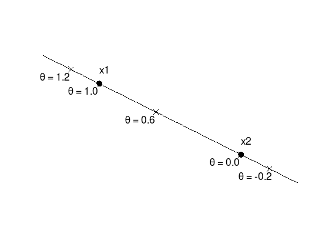
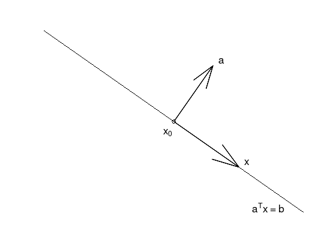
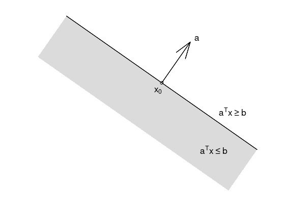
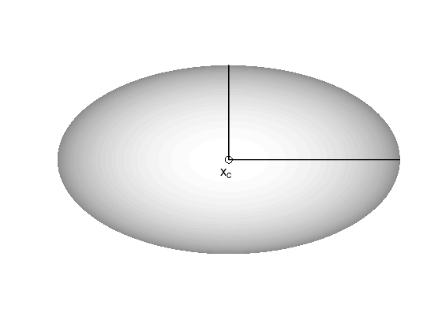
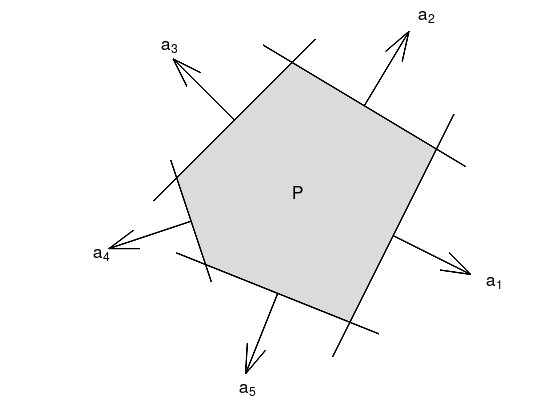
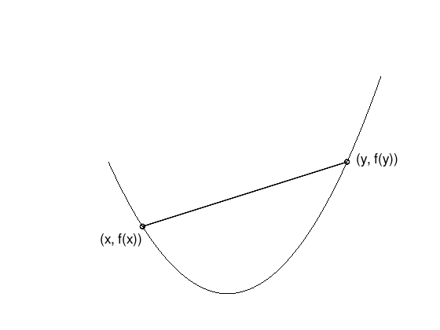
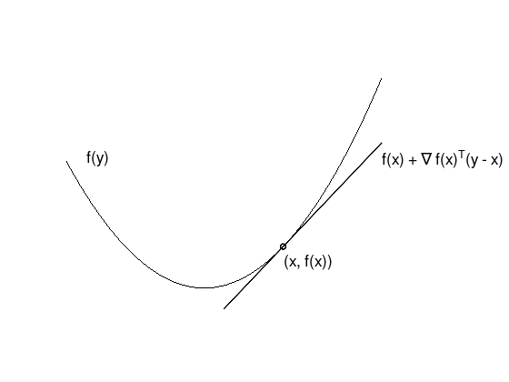
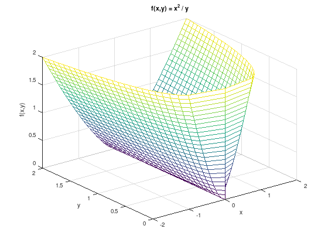

Convex functions
Contents
Convex functions¶
This section is devoted to convex sets and convex functions, which have useful properties for optimization algorithms.
Some special sets¶
Lines and line segments¶
Points \(y\) on a line through two points \(x_1 \neq x_2\) in \(\mathbb{R}^{n}\) can be expressed by
or
where \(\theta \in \mathbb{R}\).
For a line segment, \(\theta\) is limited to \(0 \leq \theta \leq 1\).
x1 = [0.0; 0.5];
x2 = [1.0; 0.0];
theta = linspace (-0.4, 1.4, 100);
y = @(t) x2 + t .* (x1 - x2);
yy = y(theta);
plot (yy(1,:), yy(2,:), 'k');
hold on;
tprops = {'FontSize', 18};
mprops = {'MarkerSize', 9, ...
'MarkerFaceColor', 'black'};
for t = [1.2, 1, 0.6, 0, -0.2]
yy = y(t);
plot (yy(1), yy(2), 'kx', mprops{:});
text (yy(1) - 0.22, yy(2) - 0.05, ...
sprintf ('\\theta = %.1f', t), tprops{:});
end
plot (x1(1), x1(2), 'ko', mprops{:});
text (x1(1), x1(2) + 0.1, 'x1', tprops{:});
plot (x2(1), x2(2), 'ko', mprops{:});
text (x2(1), x2(2) + 0.1, 'x2', tprops{:});
axis equal;
axis off;

Affine sets¶
An affine set contains the line through any two distinct points in the set.
For example the solution set of linear equations \(\{x | Ax = b\}\) is affine.
Conversely, every affine set can be expressed as solution set of a system of linear equations.
Convex sets¶
A convex set \(C\) contains the line segment through any two distinct points in the set.
Examples (from [BV04] (p. 24): first set is convex, the latter two not)

Hyperplanes¶
Affine and convex sets of the form \(\{ x \in \mathbb{R}^{n} \colon a^{T}x = b \}\) with normal vector \(a \neq 0\).
x1 = [0, 0.7];
x2 = [1, 0.0];
x0 = x1 + 0.5 .* (x2 - x1);
x = 0.25 .* (x2 - x1);
a = [0.15, 0.15 / x1(2)];
plot ([x1(1), x2(1)], [x1(2), x2(2)], 'k-');
hold on;
plot (x0(1), x0(2), 'ko');
quiver (x0(1), x0(2), a(1), a(2), 'k', 'LineWidth', 2);
quiver (x0(1), x0(2), x(1), x(2), 'k', 'LineWidth', 2);
tprops = {'FontSize', 18};
text (x0(1) - 0.04, x0(2) - 0.04, 'x_0', tprops{:});
text (x0(1) + a(1) + 0.02, x0(2) + a(2) + 0.02, 'a', tprops{:});
text (x0(1) + x(1) + 0.02, x0(2) + x(2) + 0.02, 'x', tprops{:});
text (x2(1) - 0.2, x2(2) + 0.02, 'a^{T}x = b', tprops{:});
axis equal;
axis off;

Halfspaces¶
Convex sets of the form \(\{ x \in \mathbb{R}^{n} \colon a^{T}x \leq b \}\) with normal vector \(a \neq 0\).
x1 = [0, 0.7];
x2 = [1, 0.0];
x0 = x1 + 0.5 .* (x2 - x1);
a = [0.15, 0.15 / x1(2)];
x3 = x1 - a;
x4 = x2 - a;
fill ([x1(1), x2(1), x4(1), x3(1)], [x1(2), x2(2), x4(2), x3(2)], ...
[220, 220, 220] / 256, 'EdgeColor', 'none');
hold on;
plot ([x1(1), x2(1)], [x1(2), x2(2)], 'k-', 'LineWidth', 2);
plot (x0(1), x0(2), 'ko');
quiver (x0(1), x0(2), a(1), a(2), 'k', 'LineWidth', 2);
tprops = {'FontSize', 18};
text (x0(1) - 0.04, x0(2) - 0.04, 'x_0', tprops{:});
text (x0(1) + a(1) + 0.02, x0(2) + a(2) + 0.02, 'a', tprops{:});
text (x2(1) - 0.2, x2(2) + 0.2, 'a^{T}x \geq b', tprops{:});
text (x2(1) - 0.3, x2(2), 'a^{T}x \leq b', tprops{:});
axis equal;
axis off;

Ellipsoid¶
Convex sets of the form
with center \(x_{c} \in \mathbb{R}^{n}\) and \(P \succ 0\) (symmetric positive definite) or
with \(A\) square and non-singular.
rx = 2;
ry = 0.7;
rz = 1;
[x, y, z] = ellipsoid (0, 0, 0, rx, ry, rz, 200);
colormap ('gray');
surf (x, y, z);
hold on;
plot3 ([0, rx], [0, 0], [1, 1], 'k-', 'LineWidth', 2);
plot3 ([0, 0], [0, ry], [1, 1], 'k-', 'LineWidth', 2);
plot3 (0, 0, 1, 'ko', 'MarkerSize', 9);
text (-0.1, -0.1, 1, 'x_{c}', 'FontSize', 18);
shading flat;
view (0, 90); % reduce to x-y-plane
xlim ([-rx, rx]);
ylim ([-1, 1]);
zlim ([-rz, rz]);
axis off;

Polyhedra¶
A Polyhedron is an intersection of a finite number of halfspaces and hyperplanes.
x1 = [ 0.0, 0.0];
x2 = [ 0.3, 0.6];
x3 = [-0.2, 0.9];
x4 = [-0.6, 0.5];
x5 = [-0.5, 0.2];
x = [x1; x2; x3; x4; x5];
fill (x(:,1), x(:,2), ...
[220, 220, 220] / 256, ...
'EdgeColor', 'none');
hold on;
tprops = {'FontSize', 18};
for i = 1:5
j = mod (i, 5) + 1;
p = @(t) x(i,:)' + t .* (x(j,:)' - x(i,:)');
p0 = p(0.5); % Start of normal vector
p1 = p(-0.2);
p2 = p(1.2);
% Normal vector a
d = 0.3; % direction and scale
if (x(i,1) < 0)
d = -d;
end
a = (x(j,:)' - x(i,:)');
a = [1; -a(1)/a(2)];
a = a / norm (a) * d;
plot ([p1(1), p2(1)], [p1(2), p2(2)], 'k-', 'LineWidth', 2);
quiver (p0(1), p0(2), a(1), a(2), 'k', 'LineWidth', 2);
t = p0 + 1.2 .* a;
text (t(1), t(2), sprintf ('a_{%d}', i), tprops{:});
end
text (-0.2, 0.45, 'P', tprops{:});
axis equal;
axis off;

The intersection of convex sets is convex.
Proof.
Let \(x_{1}, x_{2} \in C \cap D\), where \(C\) and \(D\) are convex sets. Then \(\theta x_{1} + (1 - \theta) x_{2} \in C \cap D\).
Solution set of finitely many linear inequalities and equalities is convex
where \(A \in \mathbb{R}^{m \times n}\), \(C \in \mathbb{R}^{p \times n}\), and \(\leq\) is component-wise inequality.
Convex functions¶
Let \(X \subset \mathbb{R}^{n}\) be a convex set. A function \(f \colon \mathbb{R}^{n} \to \mathbb{R}\) is convex on \(X\), if
for all \(x,y \in X\) and \(0 \leq \theta \leq 1\).
x = linspace (-0.7, 0.9, 50);
y = x.^2;
plot (x, y, 'k');
hold on;
plot ([-0.5, 0.7], [-0.5, 0.7].^2, 'ko-', 'LineWidth', 2);
text (-0.75, 0.2, '(x, f(x))', 'FontSize', 18);
text ( 0.75, 0.5, '(y, f(y))', 'FontSize', 18);
axis off;

\(f\) is concave if \(-f\) is convex.
\(f\) is strictly convex if \(X \subset \mathbb{R}^{n}\) is a convex set and
\[ f( \theta x + (1 - \theta) y ) \;<\; \theta f(x) + (1 - \theta)f(y), \]for all \(x,y \in X\), \(x \neq y\), and \(0 < \theta < 1\).
Examples on \(\mathbb{R}\)¶
Convex:
affine: \(ax + b\) on \(\mathbb{R}\), for any \(a, b \in \mathbb{R}\)
exponential: \(e^{ax}\), for any \(a \in \mathbb{R}\)
powers: \(x^{\alpha}\) on \(\mathbb{R}_{++}\), for \(\alpha \geq 1\) or \(\alpha \leq 0\)
powers of absolute value: \(\lvert x \rvert^{p}\) on \(\mathbb{R}\), for \(p \geq 1\)
negative entropy: \(x\log(x)\) on \(\mathbb{R}_{++}\)
Concave:
affine: \(ax + b\) on \(\mathbb{R}\), for any \(a, b \in \mathbb{R}\)
powers: \(x^{\alpha}\) on \(\mathbb{R}_{++}\), for \(0 \leq \alpha \leq 1\)
logarithm: \(\log(x)\) on \(\mathbb{R}_{++}\)
Examples on \(\mathbb{R}^{n}\) (vectors)¶
affine function \(f(x) = a^{T}x + b\) are convex and concave
norms are convex: \(\lVert x \rVert_{p} = (\sum_{i = 1}^{n} \lvert x_i \rvert^{p} )^{1/p}\) for \(p \geq 1\); \(\lVert x \rVert_{\infty} = \max(\lvert x_1 \rvert, \ldots, \lvert x_n \rvert)\)
Examples on \(\mathbb{R}^{m \times n}\) (\(m \times n\) matrices)¶
affine function
\[ f(X) = \operatorname{tr} \left( A^{T}X \right) + b = \left( \sum_{i = 1}^{m}\sum_{j = 1}^{n} A_{ij} X_{ij} \right) + b \]spectral (maximum singular value) norm
\[ f(X) = \lVert X \rVert_{2} = \sigma_{\max}(X) = \sqrt{\lambda_{\max}(X^{T}X)}. \]
Theorem 6: Unique global minimum
Let \(X \subset \mathbb{R}^{n}\) be a convex set and \(f \colon X \to \mathbb{R}\) a convex function, then each local minimum is a global minimum.
Furthermore, if \(f \in C^{1}\) (continuously differentiable) over an open and convex set \(X \subset \mathbb{R}^{n}\), then every stationary point is a global minimum of \(f\) over \(X\).
Proof:
Assume \(x^{*}\) is a local, but no global minimum. Then there is \(y \in X\) such that \(f(y) < f(x^{*})\). For \(0 < \theta \leq 1\) it follows
Thus in every neighborhood of \(x^{*}\) there exist points with smaller objective function value than \(f(x^{*})\). Therefore \(x^{*}\) cannot be a local minimum, contradiction.
Regarding the second statement, for \(y \in X\) assume the helper function
\(\Psi\) is continuously differentiable and for \(0 \leq \theta \leq 1\) not negative. Furthermore \(\Psi(0) = 0\). Therefore
If \(\nabla f(x^{*}) = 0\), then \(f(y) - f(x^{*}) \geq 0\) for all \(y \in X\). Thus \(x^{*}\) is a global minimum of \(f\) over \(X\).
1st order convex function condition¶
Theorem 7: 1st order convex function condition
Let \(X \subset \mathbb{R}^{n}\) be a non-empty, convex set and \(f \in C^{1}(\mathbb{R}^{n}, \mathbb{R})\) is convex over \(X\), then
for all \(x,y \in X\).
Proof:
Assume \(f\) is convex over \(X\). For \(y \in X\), \(0 \leq \theta \leq 1\) the function
\[ \Psi(\theta) := f(x) + \theta (f(y) - f(x)) - f(x + \theta (y - x)) \geq 0 \]is continuously differentiable and \(\Psi(0) = 0\). Therefore
\[ \Psi'(0) = (f(y) - f(x)) - \nabla f(x)^{T}(y - x) \geq 0. \]Assume \(f(y) \geq f(x) + \nabla f(x)^{T}(y - x)\) holds. Using \(\bar{x} := x + \theta(y - x)\)
\[ f(x) \geq f(\bar{x}) + \nabla f(\bar{x})^{T}(x - \bar{x}) \]\[ f(y) \geq f(\bar{x}) + \nabla f(\bar{x})^{T}(y - \bar{x}) \]Multiply the first inequality with \((1 - \theta)\), the second inequality with \(\theta\), and finally add both inequalities, then the assertion follows:
\[ (1 - \theta) f(x) + \theta f(y) \geq f(\bar{x}) + 0 = f(x + \theta(y - x)). \]
x = linspace (-0.7, 0.9, 50);
y = x.^2;
plot (x, y, 'k');
hold on;
plot ([0.1, 0.9], 0.8 .* [0.1, 0.9] - 0.16, 'k-', 'LineWidth', 2);
plot (0.4, 0.4^2, 'ko-', 'LineWidth', 2);
text (-0.6, 0.5, 'f(y)', 'FontSize', 18);
text ( 0.4, 0.1, '(x, f(x))', 'FontSize', 18);
text ( 0.9, 0.5, 'f(x) + \nabla f(x)^{T}(y - x)', 'FontSize', 18);
xlim ([-0.7, 1.3]);
axis off;

The first-order approximation of \(f\) is global underestimator.
Theorem 7 can be extended to strict convexity, which is omitted here.
2nd order convex function condition¶
Theorem 8: 2nd order convex function condition
Let \(X \subset \mathbb{R}^{n}\) be a open, non-empty, convex set and \(f \in C^{2}(\mathbb{R}^{n}, \mathbb{R})\) is convex over \(X\), then
for all \(x \in X\).
Proof:
Assume \(f\) is convex over \(X\). According to Theorem 7 and Taylor’s Theorem for \(x \in X\), \(d \in \mathbb{R}^{n}\), and sufficiently small \(t > 0\) there is
\[ 0 \leq f(x + td) - f(x) - t\nabla f(x)^{T}d = \frac{t^2}{2} d^{T}\nabla^{2}f(x)d + o(t^2). \]Division by \(\frac{t^2}{2}\) and taking the limit \(t \to 0\) results in \(d^{T}\nabla^{2}f(x)d \geq 0\), i.e. the Hessian matrix must be positive semi-definite. Note that \(X\) is an open set. Thus \(x + td \in X\) holds for all sufficiently small \(t > 0\).
Assume \(\nabla^{2}f(x) \succeq 0\) for all \(x \in X\). According to Taylor’s Theorem there is for \(x,y \in X\):
\[ f(y) = f(x) + \nabla f(x)^{T}(y - x) + \frac{1}{2}(y - x)^{T} \nabla^{2} f( x + \theta (y - x) ) (y - x) \]with \(0 < \theta < 1\) depending on \(x\) and \(y\). Because the Hessian matrix is positive semi-definite
\[ f(y) \geq f(x) + \nabla f(x)^{T}(y - x) \]holds and therefore the convexity of \(f\) over \(X\) according to Theorem 7.
Again, the extension of Theorem 8 to strict convexity is omitted here.
Examples convex function condition¶
Quadratic function: \(f(x) = \frac{1}{2}x^{T}Ax + b^{T}x + c\), where \(A\) is a symmetric \(n \times n\) matrix, \(x,b \in \mathbb{R}^{n}\), and \(c \in \mathbb{R}\).
\[ \nabla f(x) = Ax + b \quad\text{and}\quad \nabla^{2} f(x) = A. \]If \(A \succeq 0\), then \(f\) is a convex function.
Least-squares objective function: \(f(x) = \lVert Ax - b \rVert_{2}^{2}\), with \(A \in \mathbb{R}^{m \times n}\), \(x \in \mathbb{R}^{n}\), and \(b \in \mathbb{R}^{m}\).
\[ \nabla f(x) = 2A^{T}(Ax - b) \quad\text{and}\quad \nabla^{2} f(x) = 2A^{T}A \]is a convex function for any \(A\)!
Quadratic-over-linear: \(f(x,y) = x^2 / y\).
\[\begin{split} \nabla^{2} f(x,y) = \frac{2}{y^3} \begin{pmatrix} y \\ -x \end{pmatrix} \begin{pmatrix} y \\ -x \end{pmatrix}^{T} \succeq 0 \end{split}\]is a convex function for \(y > 0\).
% Following equivalent to (x,y,z := x^2/y) for plotting.
[y, z] = meshgrid (0:.08:2);
x = sqrt(y.*z);
f = @(y, z) sqrt (x .* z);
mesh (f(y,z), y, z);
hold on;
mesh (-f(y,z), y, z);
grid on;
xlabel ('x');
ylabel ('y');
zlabel ('f(x,y)');
title ('f(x,y) = x^2 / y');

Operations that preserve convexity¶
Non-negative multiple: \(\alpha f\) is convex, if \(f\) is convex and \(\alpha \geq 0\).
Sum: \(f_1 + f_2\) is convex, if \(f_1\) and \(f_2\) are convex. This extends to infinite sums and integrals.
Composition with affine function: f(Ax + b) is convex, if \(f\) is convex.
Point-wise maximum: \(f(x) = \max\{ f_1(x), \ldots, f_m(x) \}\) is convex, if \(f_1, \ldots, f_m\) are convex.
More examples for convex functions:
(Any) norm of an affine function: \(f(x) = \lVert Ax + b \rVert\).
Log-barrier-function for expressing linear inequalities:
\[ f(x) = -\sum_{i = 1}^{m} \log\left( b_i - a_i^{T}x \right), \quad \operatorname{dom}(f) = \left\{ x \colon a_i^{T}x < b_i, i = 1, \ldots, m \right\}. \]Piecewise-linear-function: \(f(x) = \max_{i = 1, \ldots, m} \left( b_i - a_i^{T}x \right)\).
For many more examples, see [BV04] (chapters 2 and 3).